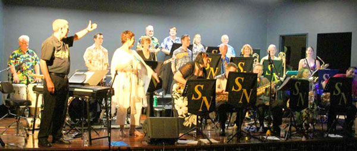

Aquapella
The Stokes Nicholson Big Band was formed in 1991 through collaboration between the late Roy Stokes and Les Nicholson. Each man had his own individual reasons for wanting a Big Band, perhaps influenced by the difference in their ages with Roy being 17 years older than Les. Roy wanted to create an opportunity to keep experienced musicians playing challenging music so their talents didn't go rusty. Les came from a different perspective and wanted to provide an opportunity for music students of all ages to sit beside experienced jazz musicians to absorb the musical synergy that classroom teaching alone cannot develop. A number of experienced musicians were invited to join the various sections of the new Big Band with most sections being led by a member of Les' already well-established Pacific Mainstream Jazz Band. The original Principals were Roy Stokes (not a member of PMJB), saxophone; Les Nicholson, trumpet; Neville Minon, trombone; and Bob Hebden, rhythm. Roy, Neville and Peter Alloway were all still private music teachers at this time and some of their pupils were the first students to be part of this adventure. The Stokes Nicholson Big Band was up and running, meeting once a month for rehearsals with an expectation that each section would practise individually or as a group in between these rehearsals. Sadly Roy passed away on 1st January 1993 after a period of illness. Les continued to manage the band and conduct rehearsals, as well as playing first trumpet. In 1997 he enlisted the help of John Ruffle who took on the role of Musical Director, allowing Les to relax a little and enjoy his playing more. Roy would no doubt be very proud to see how much his beloved Big Band has developed since its formation as it is now a very accomplished band with a diverse repertoire and the technical expertise capable of backing great Jazz singers. The band today demonstrates it has achieved the aims of both Roy and Les with experienced musicians arriving in town and feeling very proud to join such a powerful big band. A number of the original student members from 1991 are still in the band and have now joined the ranks of the experienced musicians and new students are still progressing from school bands to the Stokes Nicholson Big Band.